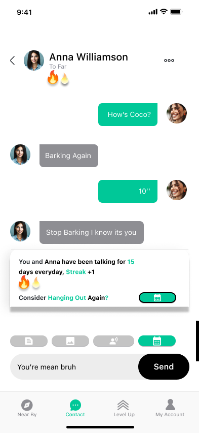

Timeline

- Remove Journaling Feature
- Add more Iconography
User Feedback
- Add Streaks to Encourage Interactions
- Plan Hangout Feature
User Feedback
- Add Block Feature
- Turn on/off Avatar Feature
User Feedback
User Feedback